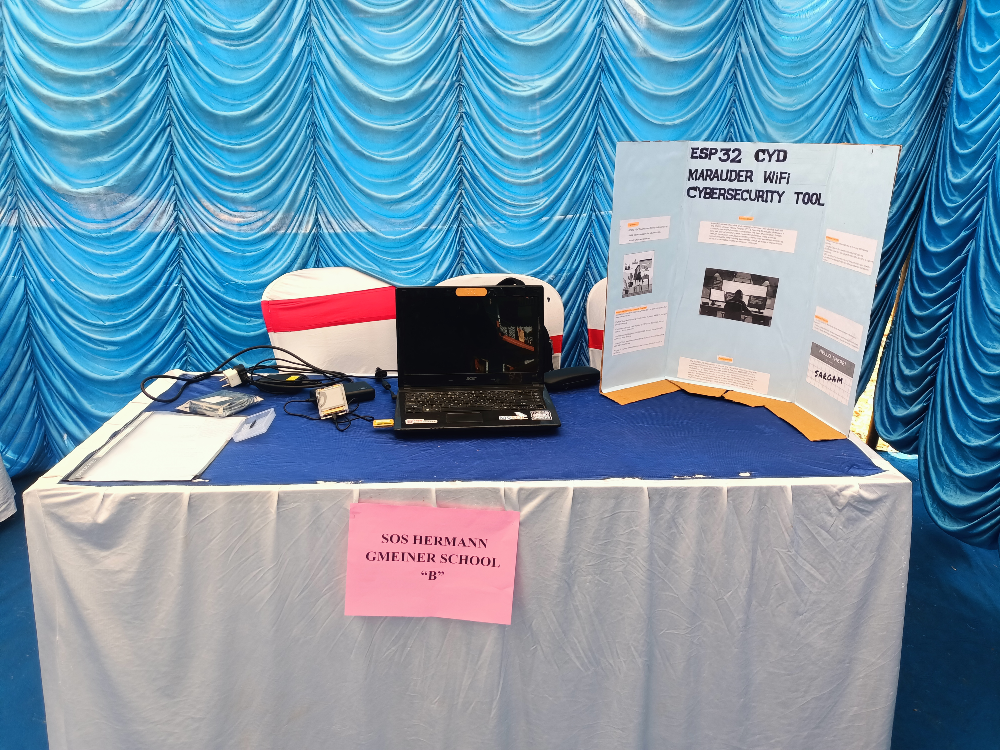

This project was one of my favourite projects. I was able to take it to two different Science Fairs. I was able to win the first prize in one of them.
The concept was really simple, downloading Marauder firmware on the CYD, which worked out great. I actually won 1st price in Intra-school compitition but lost in Inter-school compitition.I first bought a CYD (short for Cheap-Yellow-Display).Then with type-C cable, I loaded the Marauder firmware.The project was almost done here. I had a SIM card in which I loaded a HTML web-page for evil portal attack. I did a few reharsal and then made the board for presentation. I was really happy with the project and I am planning to make some few upgrades to it in the future.